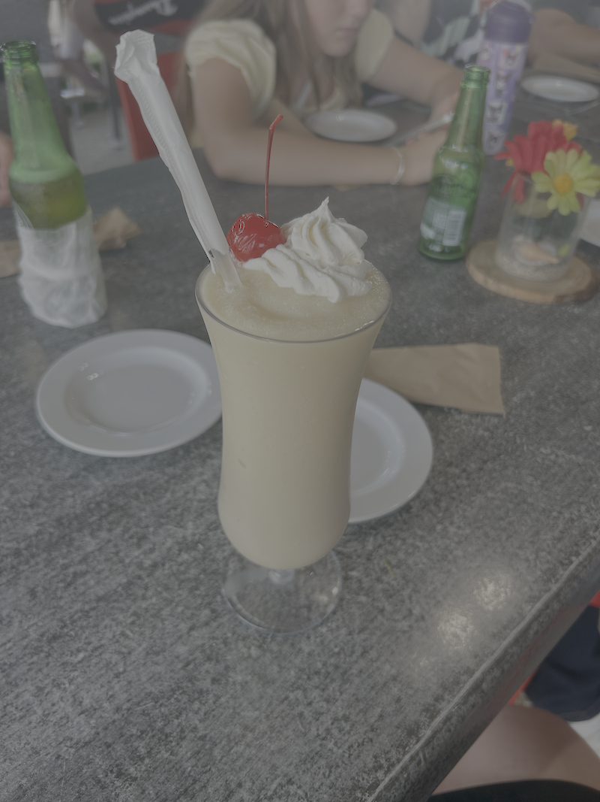

Must Visit & Try

Foods to Try:
- Mofongo: mashed plantain typically served with meat.
- Arroz con gandules: orange rice with pigeon peas and ham
- Pernil: slow roasted and tender pork shoulder
- Pastelillos: fried empanadas filled with seasoned chicken or ground beef
- Tostones: double fried plantains and smashed to make almost a chip
- Chuleta Kan Kan: a very large pork chop
Desserts to Try:
- Quesitos: puff pastry with cream cheese filling
- Tembleque: coconut milk base with a gelatinous consistency
- Pan de Mallorca: soft coiled sweet bread topped with powdered sugar
- Limber: frozen ice pop made in small disposable plastic cups
- Piragua: shaved ice topped with fruity syrups, similar to snow cones
Top 3 Beaches to Visit
- Playa Tortuga: Located near Isla Culebra, it's a 1.5 hour ferry ride from Puerto Rico, then a 25 minute water taxi ride.
- Crash Boat: Located in Aguadilla, it was formerly used as a military port from 1939 to 1973, which is how it got its name.
- Playa Sucia: Located in Cabo Rojo, its name translates to "dirty beach", but its actual name is "La Playuela".